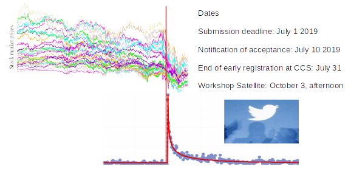

Workshop Criticality on networks and socio-economic systems

Dates
Submission deadline: July 1 2019
Notification of acceptance: July 10 2019
End of early registration at CCS: July 31
Workshop Satellite: October 3, afternoon
To be held at the Conference on Complex Systems 2019. Nanyang Technological University. Singapore. 30 September - 4 October, 2019
Scope
The goal of this satellite is to open cross-disciplinary discussions about the concept of criticality. How can we define criticality in different scenarios? And which signs of criticality have been reported in the scientific literature. We are interested in intersecting different definitions about criticality, but also different meanings with the aims of achieving basic agreements about the signs of criticality, generally speaking.